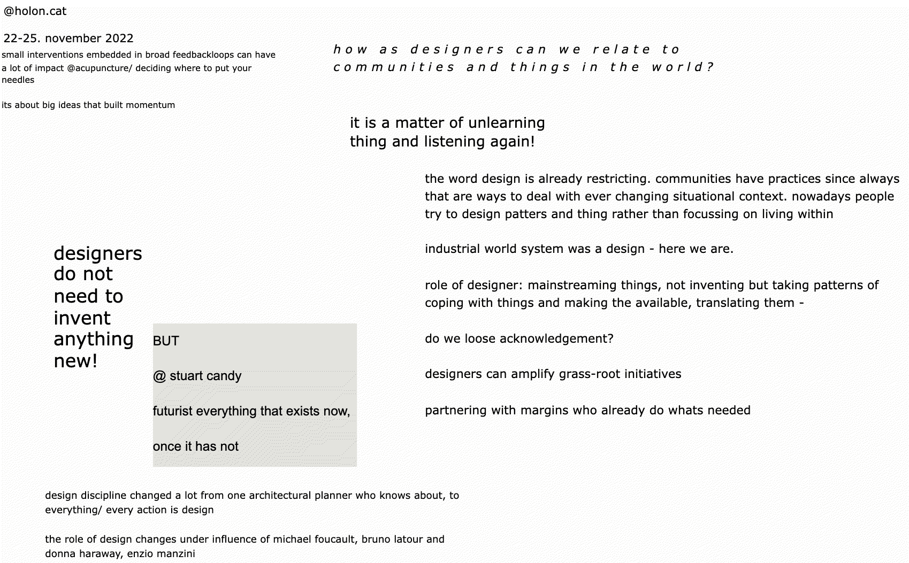

¶
üóì Week 8 / 22 - 26 November 2022
community engagement¶
with Markel Cormenzana and Merce Rua from HOLON in Casa Batllo
this course aims to show how the design practice and the role of the designer has been evolving over time. instead of seeing our work as a service (design over), or as a means to satisfy users needs (design for), design practices today deal with the agency of all involved throughout the process (design with). with this frame in mind we talked about creative communities and the potentialities of transitioning.
but mainly this week was a week full of exploring design. eventually we talked about the responsibility of providing spaces that enable, allow, and support the meeting. we talked about the intersection of fields and species, of research and experiences; the places where traditions manifest their roots in new soils.

we talked about creating dialogues in various ways.
creating dialogues in a) affirmative or b) critical ways. Or in c) acknowledging ways. we talked about worldviews and postures, about what it means to design for more-than-human rather than human. we talked about social capital and what it means to be part of a interdependent net of resources.
we talked about facilitating processes that have the potential to enable transition.
“facilitation means to make something easy, to render less difficult, from stem of Latin facilis “easy to do,” from facere “to do”.” to be the facilitator of a transition means “to provide the infrastructure, process and support necessary to perform a task, but staying out of it.” it means to listen and sensitively direct, manage, introduce and control a space of ideation. as facilitator we design a space in which (ideally) every actant and their thoughts feel included, a space that supports emergence. one of the biggest challenge in facilitating is the emergent nature of the situational contexts with all its different actants. every situation must be approached anew, open to the unknown and the unexpected. this is a challenge but at the same time a opportunity, facilitating is not only a human quality but it is a resources we have access to, but with which we have to deal responsibly, in line with our human restrictions. what is the time I have? what are the energies I can give? a key in dealing with our resources responsibly is preparation. Preparing the meeting as followed: have a good introduction, a beginning, then framing the session and have a reflective closure. it is essential to talk about what happens after, to think about the follow up.
engaging in communities - actant map¶
another map to steward the undirectedness
the process of mapping out a challenge, interest and point of transition, is essential to include communities and all another agents that are involved, that are related to the topic. before we intervene, engage in a (social) system, we have to understand the (social) capitals at stake. following Bruno Latour, we are using the term actant to describe all participating entities that have agency in a chosen situatioship.
transition design a la HOLON¶
Transition Design is a transdisciplinary approach aimed at addressing the many ‚Äòwicked‚Äô problems confronting 21st century societies: climate change, forced migration, political and social polarization, global pandemics, lack of access to affordable housing/healthcare/education and many others. These problems are interconnected, interdependent and always manifest in place and culture-specific ways. Transition Design argues that new knowledge and skill-sets are required to address these problems, and that their resolution is a strategy for igniting positive, systems-level change and societal transitions toward more sustainable, equitable and desirable long-term futures”
Merce Rua introduced us into the way that HOLON transition design and through that, facilitate sustainable and social progress. the collective design for communities by engaging themselves in them and taking in the role of facilitators. this enables complexities to be acknowledged and guiding force. as a facilitator, one aims to find a balance in active and passive space creation, including and excluding influential factors. she summarized six steps for us that guides HOLON in their work
1 sense and understand system dynamic: here actant mapping can be a useful technique to understand the forces at stake
2 identify pressure and leverage points
3 build more desirable future visions: coming up with alternative realities
4 crafting an intervention portfolio to plot who else is in the system: coming up with practical implementations
5 probe, sense, respond: waiting for the system to react
6 practice the back casting: starting with the future vision and go background to the present in a transition pathway
this builds on Donella Meadows, who is a system researcher that was part of the author team who wrote the limits to growth. she generally speaks of 12 points of leverage in every system, 12 points in which you can start, intervene. here, action can take place and will have an impact.
more detailed notes on what theories we engaged in can be followed here
what I take away¶
during this week I am engaging with the work of Thom van Dooren and other thinkers that write about our ability to respond to the „world of mass extinction in which we find ourselves in”. out „response-ability to make decisions in the presence of those who bear their consequences”. In Multispecies Studies - Cultivating Arts of Attentiveness, the three authors ask the question,
„who benefits when species meet?”
it is this meeting that I am trying to grasp, this meeting which seems so essential to how we, how they, how the us will go on. tthe decisions we make today are about how the all „will get on inside a world that is, however multiple, also shared, finite, and (in many ways) struggling“.
this is what I take from this week, a response-ability to listen, a question that might not be up to me to speak up for but which I might possibly facilitate to echo in my silences.
„What does it mean to hold open space for another?”
exercise transition in a creative community¶
from the actant map I choose the urban cycle as actant whose agency I would like to change:
creative community: water-consumption awareness in urban environments (Valldaura as a research lab?)
context: access to water in the world is unequal and unfair. tthose with power (economic monopoly) decide how and where water is allocated, while in regions of economic and political instability freshwater is scarce, even if there are natural reserves.
current situation: in Barcelona, the freshwater infrastructure is well developed and well thought out. the water comes from two rivers and the water reservoirs under the earth’s surface. There are even desalination plants that help make seawater drinkable for humans. here, citizens consume about 122 liters of fresh drinking water every day. most of it is used to wash clothes and flush away excrement. in parts of the world where infrastructures are not so well developed and political and economic authorities are not so concerned about an even distribution of water resources to their citizens, a daily consumption of 10-15 liters of water is not exceptional. in these areas, fresh water is mainly used for drinking and washing one’s body. according to international health organizations, a person who has access to less than 40 liters of fresh water per day is considered water poor. so if we consume 122 liters of water, of which only 2 liters at most enter our bodies directly through drinking, and are unaware of where the other 120 liters go, this seems problematic in view of the increasing scarcity of freshwater resources globally.
engagements and limits: creating awareness about well-established patterns and habits is not easy. especially not when the impacts are not directly felt but outsourced to distant places. therefore, engagement must happen in closed environments in which impact is created, seen, and can be followed. a possible example would be the creation of a working-bubble (Valldaura labs?) in which a water cycle is represented as an interdependent unit within global climatological systems. this bears its limits because it created a reality that is not directly linked to the reality urban dwellers live in.
theory of change: structural change is always hard to inspire because it asks for infrastructural and habitual transformations that are time and thought intensive. yet habitual changes often come by changes in convictions and realizations about newly discovered knowledges. here, changes occur when trends become mainstream, when things are figured out and a path is mapped out. a dominant theory of change might approach transition to conscious water consumption with the idea of measure, control, change. in this case it has its limits as we experience that measuring and controlling water consumption in the city context is almost impossible. living with the infrastructure of the homes and of the entities visited in cities, fresh water is used very often unconscious and out of habit. therefore, I propose to prototype cultures that deal with water consciously. having examples (like a Valldaura lab bubble) of how conscious water consumption could work inspires, motivates, and shows that the unthinkable is actually possible.
design challenges and opportunity:
challenges:
• pre-made infrastructures in houses and water-resource management
• knowledge about what freshwater is and what it means to the global ecosystem
• attention to individual usage of water
• habits of using fresh-water with the thought of it being endlessly renewed
• …
opportunities:
• increased water scarcity on a global scale (increased media attention)
• droughts on a local scale led to water restrictions in the city; in other parts floodings on a local scale led to the destruction of all kinds of essential infrastructures in cities
• the consequences of the lack of access to fresh water are easily perceived as a major threat
• water is a renewable resource, and its cycle is made visible relatively easy in DIY experiments
• …